观时
顺应岁月的节律，让草木与酒液在静置中缓慢交融。
以草木入酒，以时间成味。观素将微澜、藏山、松年与九候收于礼盒之中， 让赠礼回到温润、克制与从容。
顺应岁月的节律，让草木与酒液在静置中缓慢交融。
褪去繁杂与浮躁，只封存大地草木最纯粹的本味。
摒弃喧哗的客套，化作推杯换盏间不动声色的体面与温度。
不为瞬息的消耗，而是一份经得起光阴沉淀与反复翻阅的案头藏品。
以清透草木气息入礼，轻一些，也静一些。适合节令往来与亲近相赠。
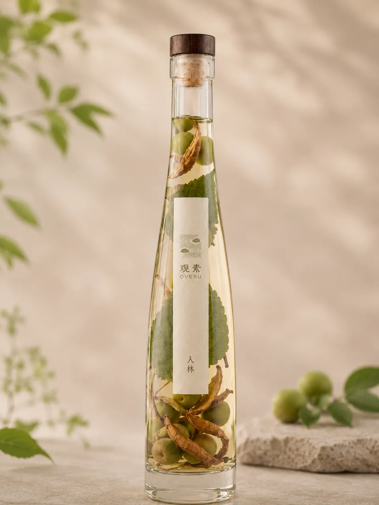
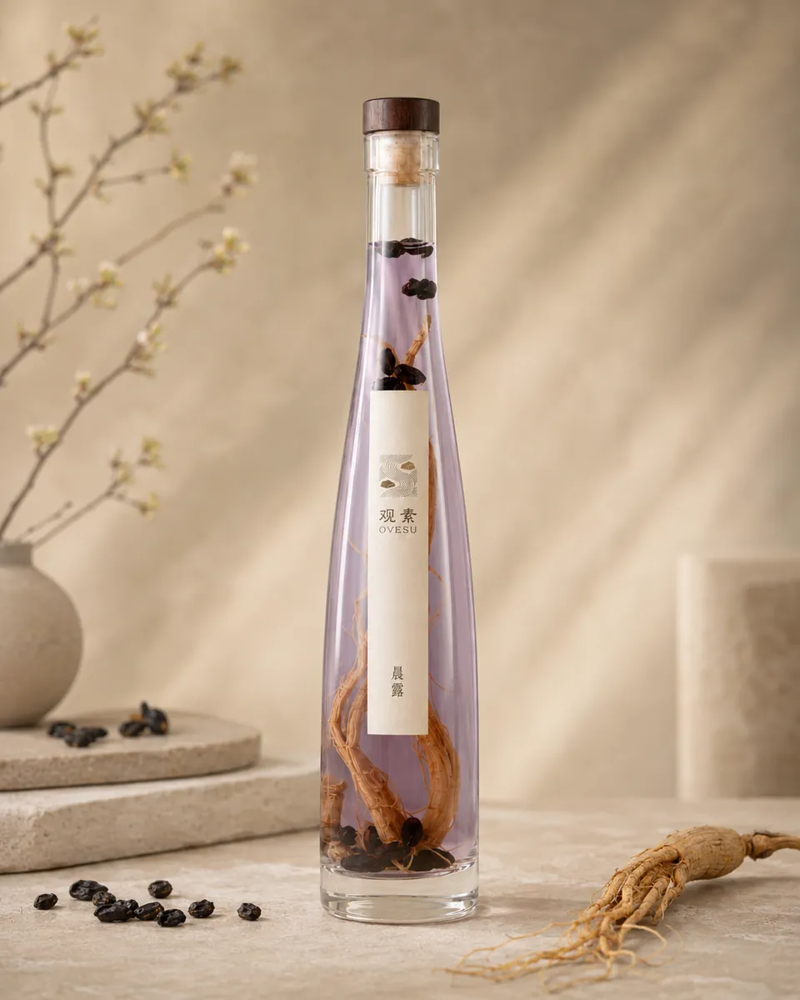
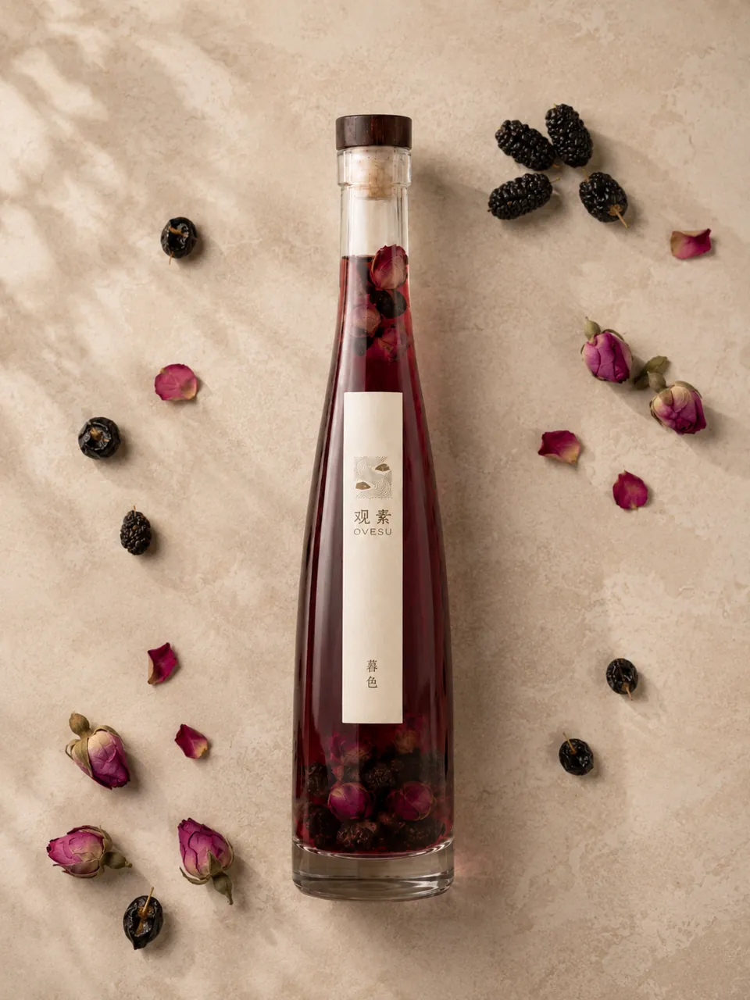
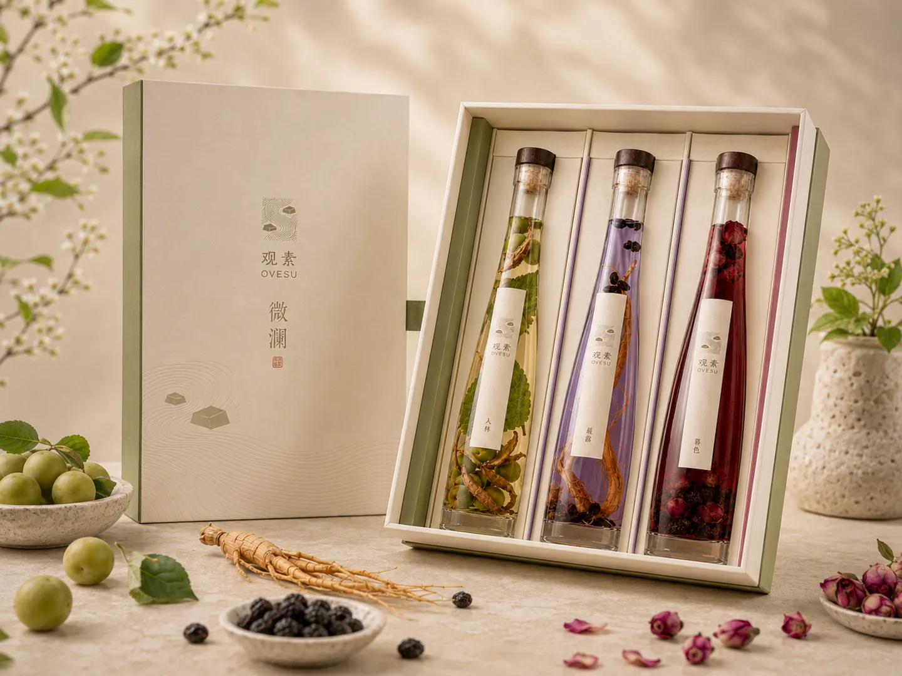
系列礼盒
入林、晨露、暮色同置一盒，气息由轻至柔，更适合被安静地递出， 也适合被慢慢地饮完。
更沉静，也更有秩序，适合留给需要分寸感与底蕴的相赠时刻。
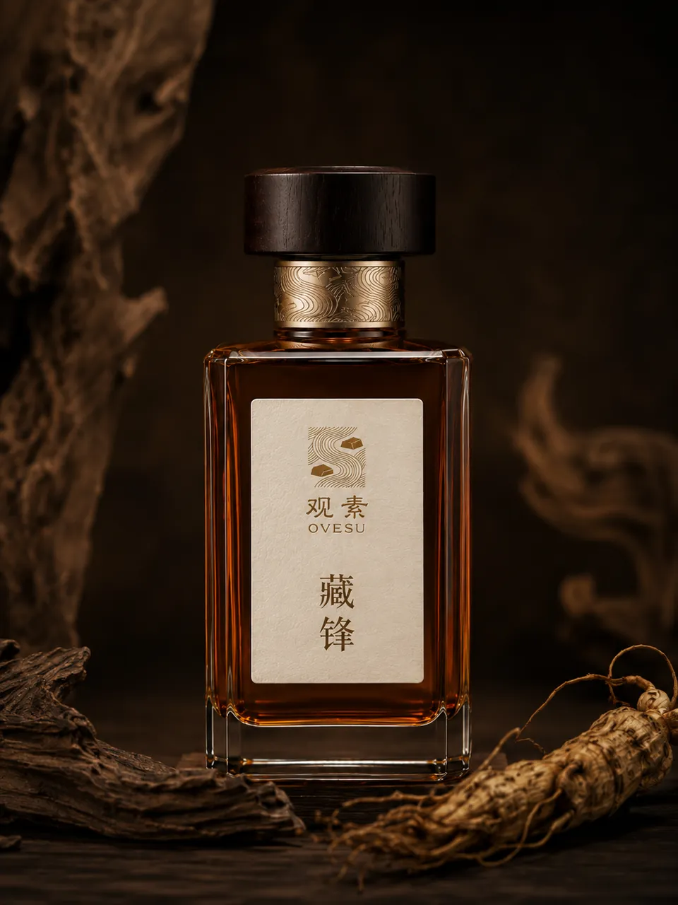
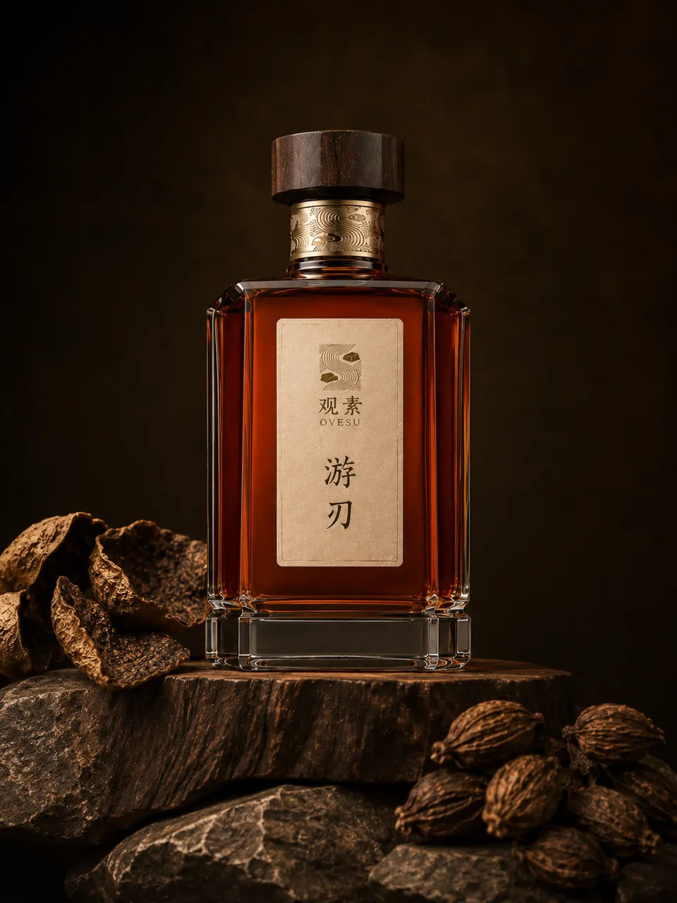
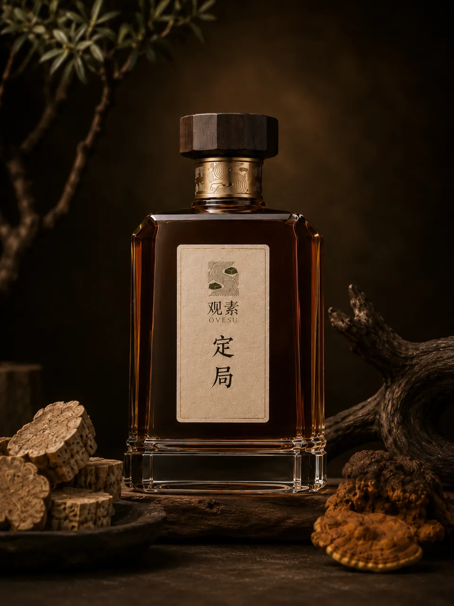
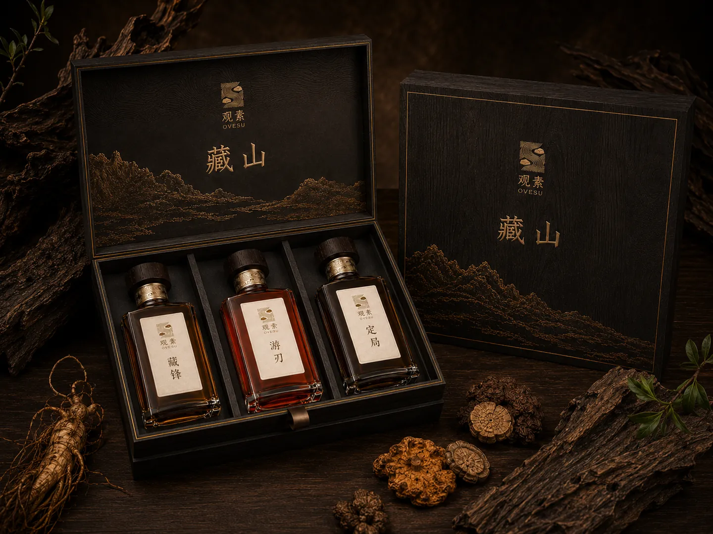
系列礼盒
将【定局】、【藏锋】、【游刃】并置于一匣。深邃的木质气息与醇厚的酒体交叠， 不再是轻浮的交际，而是将一份厚重的敬意，稳稳安放于案前。更沉静，也更有秩序， 适合留给需要分寸感与底蕴的相赠时刻。
围绕陪伴与岁月感展开，更适合留在长辈日常中的一份温和心意。
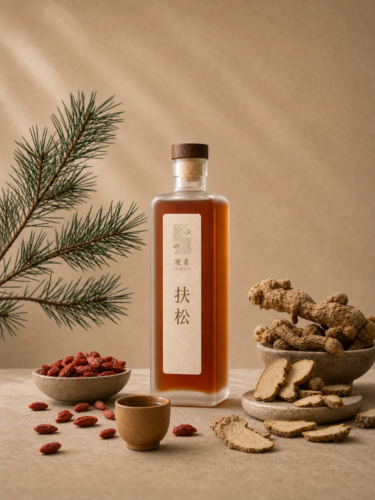
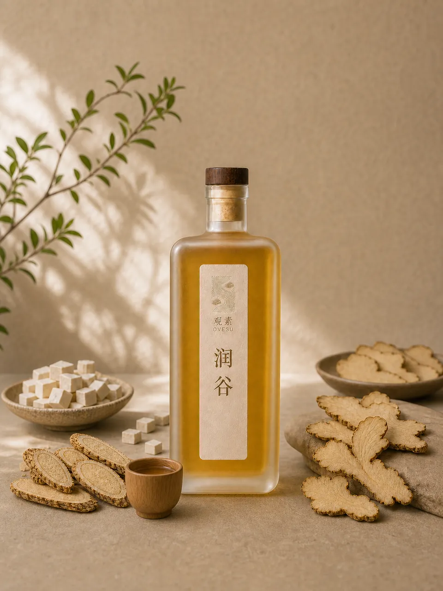
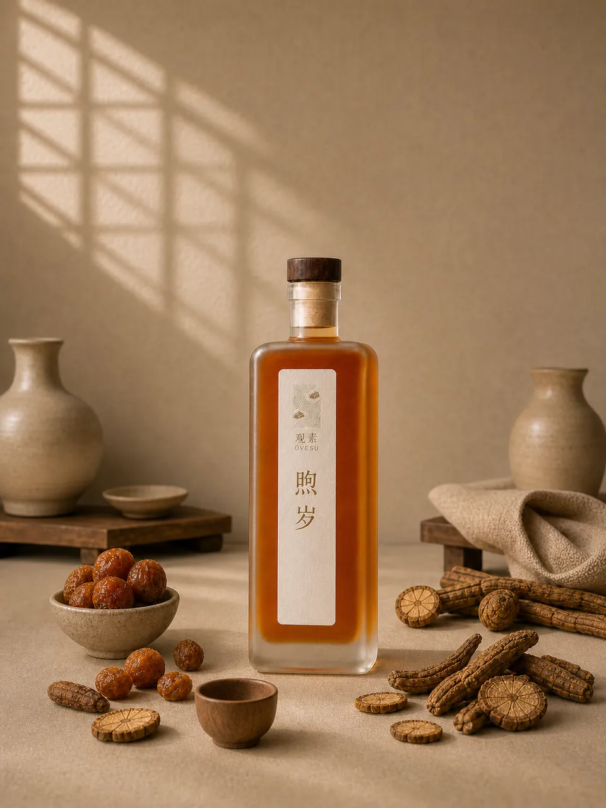
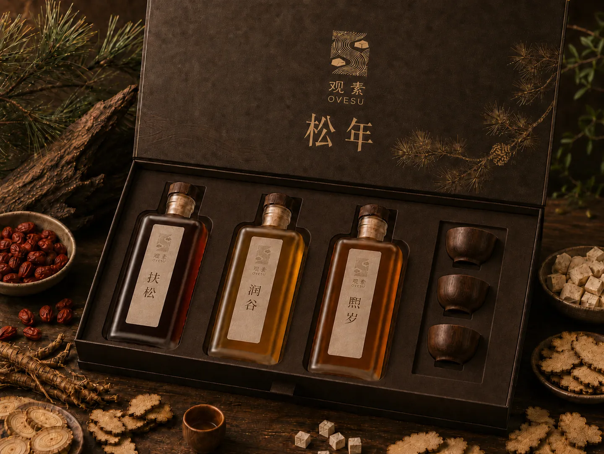
系列礼盒
将【扶松】、【润谷】、【煦岁】连同实木酒盏一并妥帖收纳。没有张扬的功效与虚浮的喧闹， 只有顺应时节的牵挂。像一束温和的暖光，它不过分耀眼，却能长久地陪伴在长辈的日常里， 慢慢生出岁月的温度。
九候并置，时间与草木的三条脉络于此完整展开。
这不是简单的数量叠加，而是观素关于“情绪、底气与岁月”的完整陈列。 一套九候，藏尽四季草木，适合郑重地赠予，或安静地留于自己的书案，经得起漫长光阴的摆放与回看。
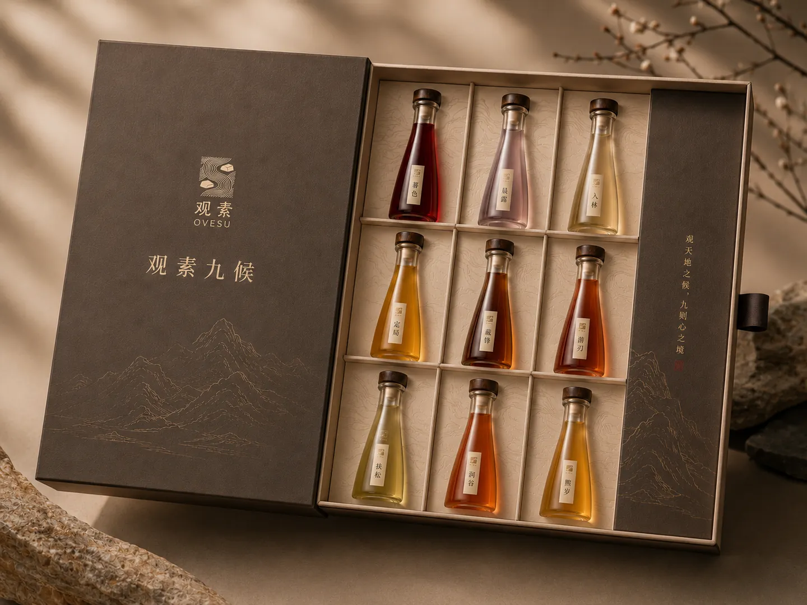